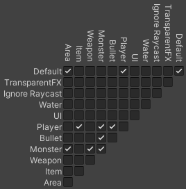
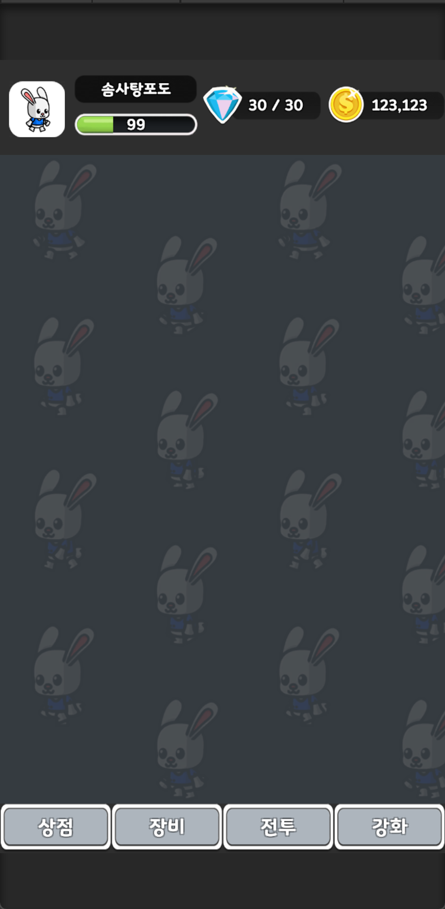
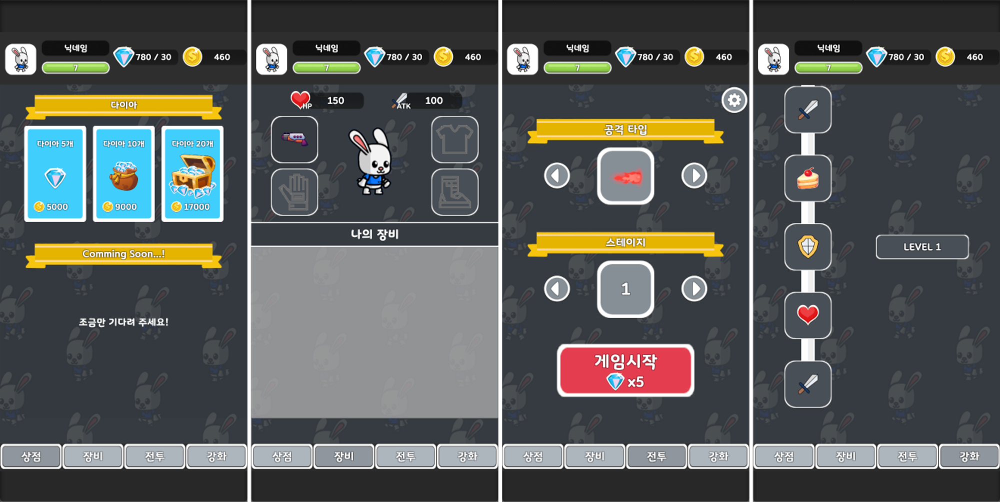
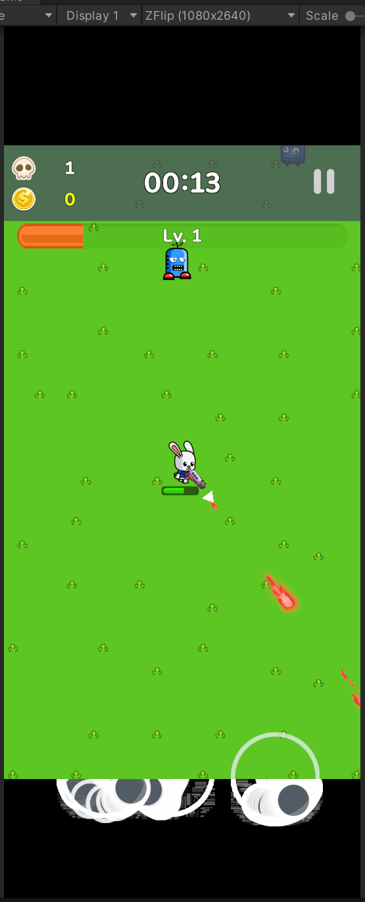
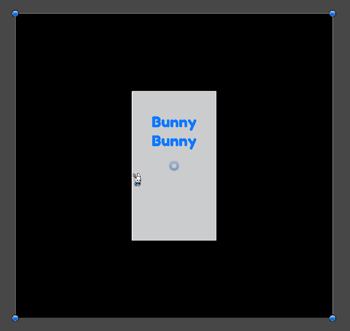
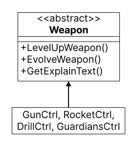
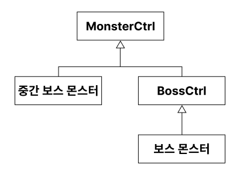
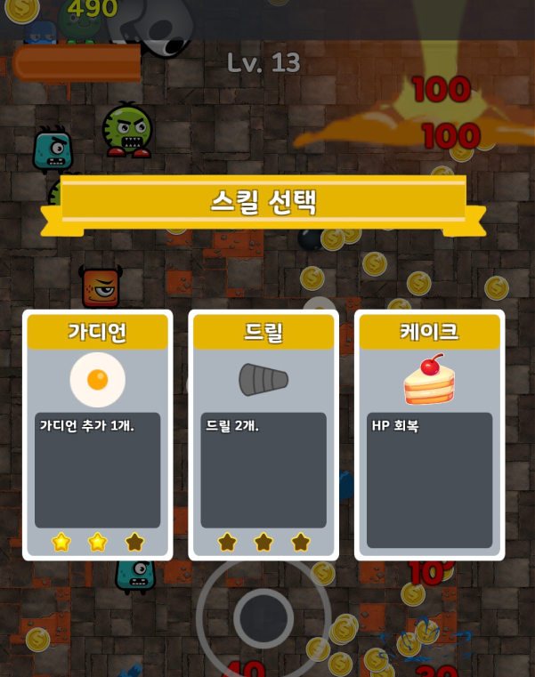
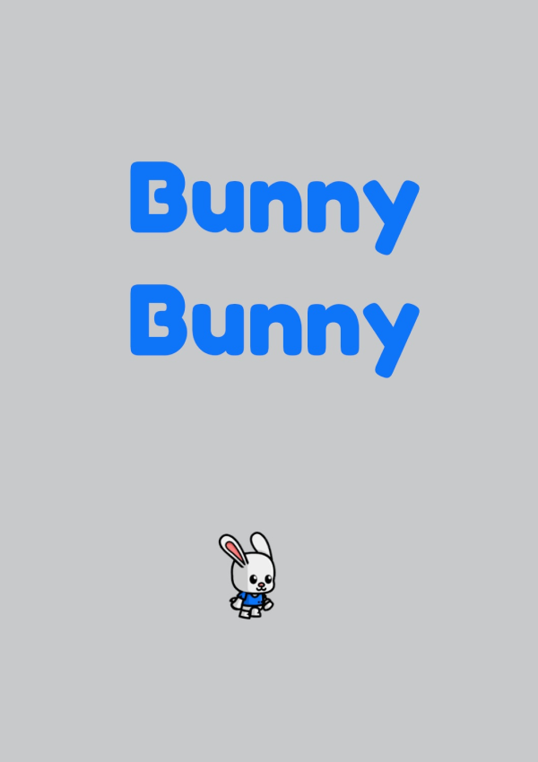

기술소개서_BunnyBunny
- 사용 엔진
- Unity 2022.3.15f1
- 개발 기간
- 2024.02 ~ 2024.05
Object Pooling을 이용하여 메모리 관리하기
- 메모리 관리가 필요한 Object 목록
- Monster
- Bullet, Evolve Bullet, Bullet Effect
- Sound
- Object Pooling 이용하는 스크립트 : MemoryPoolMgr.cs
- 예시 코드
public class MemoryPoolMgr : MonoBehaviour { Transform monsterPool = null; public GameObject[] NorMonPrefs1 = null; //Stage_1 List<MonsterCtrl> MonCtrlPool = new List<MonsterCtrl>(); //Normal Monster [HideInInspector] public int ActiveMonsterCount = 0; int initMonCnt = 30; void Start() { monsterPool = GameObject.Find("MonsterPool").GetComponent<Transform>(); //norMonPool for (int i = 0; i < initMonCnt; i++) { int idx = Random.Range(0, NorMonPrefs1.Length); GameObject mon = Instantiate(NorMonPrefs1[idx], monsterPool); mon.SetActive(false); MonCtrlPool.Add(mon.GetComponent<MonsterCtrl>()); } } public MonsterCtrl AddMonsterPool(int stage) //Pool에 norm 몬스터 추가 or Mon return { ActiveMonsterCount++; for (int i = 0; i < MonCtrlPool.Count; i++) { if (!MonCtrlPool[i].gameObject.activeSelf) return MonCtrlPool[i]; } int idx = Random.Range(0, NorMonPrefs1.Length); GameObject mon = Instantiate(NorMonPrefs1[idx], monsterPool); mon.SetActive(false); MonsterCtrl monCtrl = mon.GetComponent<MonsterCtrl>(); MonCtrlPool.Add(monCtrl); return monCtrl; } }
- 메모리 관리가 필요한 Object 목록
효율적인 충돌 처리를 위한 Layer 설정
- Physics 2D Layer Collision Matrix

- Player Layer와 충돌하는 Layer
- Item, Monster, Bullet
- Monster Layer와 충돌하는 Layer
- Area, Weapone, Monster, Bullet
- Physics 2D Layer Collision Matrix
UI에서 중복되는 부분 독립된 Scene으로 재활용하기
- 기존씬에서 중복되는 Scene을 추가로 불러온다.
- 중복되는 UI 관리 하는 스크립트 : UpLowUIMgr.cs
- 예시 코드
public class UpLowUIMgr : MonoBehaviour { public Button Store_Btn = null; void Start() { if (Store_Btn) Store_Btn.onClick.AddListener(StoreBtnClick); } void StoreBtnClick() { SceneManager.LoadScene("Store"); SceneManager.LoadScene("UpLowUI", LoadSceneMode.Additive); }
- 중복 되는 상단, 하단 UI를 독립된 Scene으로 구현.

- 상점, 장비, 전투, 강화 탭

화면 비율 고정하기
- 각기 다른 디바이스의 해상도에 모두 대응하기 어렵기 때문에 기준 해상도를 정함.
- 기준 해상도 = 9 : 16
- 해상도 비율 잡는 코드 스크립트 : ScreenMgr.cs
- 예시 코드
public class ScreenMgr : MonoBehaviour } { const int width = 9; const int height = 16; Camera cam = null; void Awake() { cam = Camera.main; Rect rect = cam.rect; //기기 화면비 float deviceRatio = (float)Screen.width / Screen.height; //원하는 화면비 float targetRatio = (float)width / height; //Viewport Coords에서의 Height, Width 크기 (0f~1f) float scaleHeight = deviceRatio / targetRatio; float scaleWidth = 1.0f / scaleHeight; if (scaleHeight < 1.0f) //세로가 더 큰경우(==위아래에 레터박스 생김) { rect.height = scaleHeight; rect.y = (1.0f - scaleHeight) / 2.0f; } else //가로가 더 큰경우(==좌우에 레터박스 생김) { rect.width = scaleWidth; rect.x = (1.0f - scaleWidth) / 2.0f; } cam.rect = rect; } }
- 각기 다른 디바이스의 해상도에 모두 대응하기 어렵기 때문에 기준 해상도를 정함.
Viewport 영역 밖의 잔상 버그 해결
22 : 9(2640x1080) 해상도에서의 잔상 버그(스크린샷)

- 해결 방법
- Camera Viewport 영역 밖을 검정색 Raw Image로 둘러쌈.
- 다른 Object들에 방해되지 않게 Sort Order를 최상위로 올림.

Scene이 바뀌어도 사라지지 않는 Singleton
- AllSceneMgr.cs : Singleton으로 구현한 오브젝트.
- InitScene에서 생성되고 게임이 종료될 때까지 사라지지 않는다.
- Scene 전환시 필요한 정보들을 전달한다.
- Stage 번호, 공격 타입, User 정보, Scene 정보 …
- MonoSingleton 코드(스크립트)
//제네릭 문법 public class G_Singleton<T> : MonoBehaviour where T : G_Singleton<T> //Scene 이 넘어가더라도 사라지지 않는 싱글턴 { private static T m_Instance = null; private static object _syncobj = new object(); private static bool appIsClosing = false; public static T Instance { get { if (appIsClosing) return null; lock (_syncobj) { if (m_Instance == null) { T[] objs = FindObjectsOfType<T>(); if (objs.Length > 0) m_Instance = objs[0]; if (objs.Length > 1) Debug.Log("There is more than one " + typeof(T).Name + " in the scene."); if (m_Instance == null) { //이쪽이 첫번째로 들어오고... string goName = typeof(T).ToString(); GameObject a_go = GameObject.Find(goName); if (a_go == null) a_go = new GameObject(goName); m_Instance = a_go.AddComponent<T>(); //Awake()가 이쪽에서 발생된다. } else { m_Instance.Init(); } } return m_Instance; }//lock (_syncobj) } // get }//public static T Instance public virtual void Awake() { //이쪽이 두번째로 들어온다. Init(); } protected virtual void Init() { if (m_Instance == null) { m_Instance = this as T; DontDestroyOnLoad(base.gameObject); } else { if (m_Instance != this) { DestroyImmediate(base.gameObject); } } } // 초기화를 상속을 통해 구현 private void OnApplicationQuit() //앱 강제 종료시 발생되는 함수 { m_Instance = null; appIsClosing = true; } }
- AllSceneMgr.cs : Singleton으로 구현한 오브젝트.
화면 좌표를 이용한 드릴 바운딩 구현
- 현재 스크린 좌표에서 벽에 부딪혔는지 확인
- 부딪혔으면 진행방향 바꾸고 오브젝트 회전 시켜주기
- 예시 코드
void WallBounding() { if (transform.position.x < ScreenMgr.CurScMin.x) moveDir.x = Mathf.Abs(moveDir.x); //-> 양 else if (ScreenMgr.CurScMax.x < transform.position.x) moveDir.x = -Mathf.Abs(moveDir.x); //-> 음 if (transform.position.y < ScreenMgr.CurScMin.y) moveDir.y = Mathf.Abs(moveDir.y); else if (ScreenMgr.CurScMax.y < transform.position.y) moveDir.y = -Mathf.Abs(moveDir.y); moveDir.Normalize(); float angle = Mathf.Atan2(moveDir.y, moveDir.x) * Mathf.Rad2Deg; transform.rotation = Quaternion.AngleAxis(angle, Vector3.forward); }
Class와 JsonUtility을 이용한 정보 저장
- 저장 경로 : Application.persistentDataPath
- 설치 플랫폼 별로 경로가 달라지는 것을 방지하기 위해.
- InGame에서 얻은 정보(경험치, 골드, 클리어 여부 등)를 User 정보와 연동하기 위하여 WriteUserInfo() 함수 사용.
- 현재 UserInfo Class의 상태를 json string 으로 변환하여 file에 쓰는 함수.
- User 정보를 관리하는 사용자 정의 Class 스크립트 : UserInfo.cs
- 예시 코드
void WriteJsonFile() { string jsonStr = JsonUtility.ToJson(userClass); File.WriteAllText(filePath + fileName, jsonStr); }
- 현재 UserInfo Class의 상태를 json string 으로 변환하여 file에 쓰는 함수.
- 저장 경로 : Application.persistentDataPath
Inheritance을 이용한 Weapon Class, Monster Class
- Weapon 구조

- Monster 구조

- Weapon 구조
랜덤으로 스킬 카드 나타내기
- InGame에서 레벨업 할 때 마다 스킬 선택 팝업.
 - 이 때 SkillUpPopUp.cs의 OnEnable()이 실행되며 Skill 카드가 무작위로 섞임.
- 무기를 모두 진화시키기 전까지는 카드가 3장 등장.
- 모두 진화시키면 케이크와 골드 2장 등장.
- 카드 섞기 예시 코드
//순서가 있는 공 n개에서 r개 뽑기 List<int> ShuffleNum(int n, int r) { if (n < r) return new List<int>(); //r은 n보다 클 수 없음 List<int> result = new List<int>(); List<int> tmp = new List<int>(); for (int i = 0; i < n; i++) tmp.Add(i); for (int i = 0; i < r; i++) { int idx = Random.Range(0, tmp.Count); result.Add(tmp[idx]); tmp.RemoveAt(idx); } return result; }
- InGame에서 레벨업 할 때 마다 스킬 선택 팝업.
비동기로 Scene 전환 애니메이션 만들기
- 로딩씬을 구현하기 위해 비동기로 씬을 로드함.
 - 비동기 씬로드 함수 : AllSceneMgr.cs#L203
- 예시 코드
public class AsyncSceneLoader : MonoBehaviour { // 씬 로드를 시작하는 함수 public void LoadSceneAsync(string sceneName) { StartCoroutine(LoadAsync(sceneName)); } // 비동기 로드를 처리하는 코루틴 IEnumerator LoadAsync(string sceneName) { // 씬을 비동기로 로드 시작 AsyncOperation operation = SceneManager.LoadSceneAsync(sceneName); while (!operation.isDone) { // 로드된 진행 상황을 가져옴 (0에서 1 사이의 값) float progress = Mathf.Clamp01(operation.progress / 0.9f); yield return null; } } }
- 로딩씬을 구현하기 위해 비동기로 씬을 로드함.